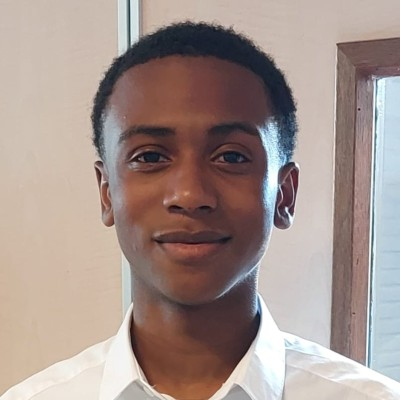

Jahlani Arrindell
HBO-student Informatica // Rotterdam
Ik ben Jahlani, tweedejaars HBO-student Informatica in Rotterdam. Ik bouw software in teams, van back-end API's tot complete webapplicaties. Ik leer het liefst door te maken. Naast mijn studie werkte ik in de horeca en de bezorging. Daar leerde ik aanpakken en samenwerken onder druk.
Bekijk mijn projecten